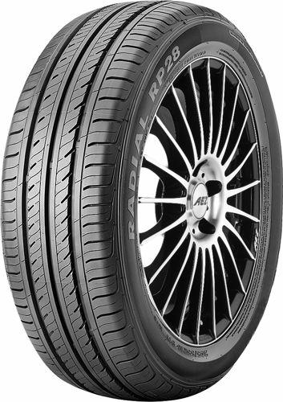

Trazano RP28 195/50R16

RM 145.00
The Trazano RP28 is an economical passenger car tyre designed for everyday driving. Its tread pattern is engineered to provide reliable dry and wet road performance, comfortable handling and reduced road noise. A budget-friendly choice for city driving and daily commuting.
Klang Hock Li Tyre Services Sdn Bhd, Klang, Selangor, Malaysia.
View live product details and enquire